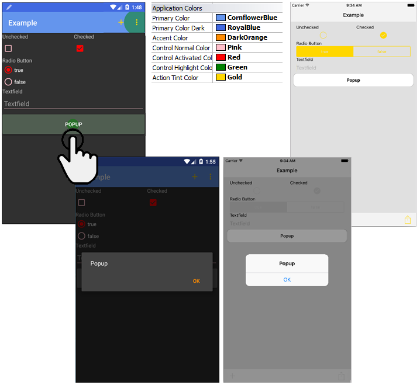

This group of Properties is listed on the Application Class of the Theme for Smart Devices and is made up by the following properties:
| Property | Description | Scope |
| Primary Color | Should be the distinctive color of the company, brand or product (e.g. red for Gmail, green for Hangouts, white for GDrive, etc). It is used by default in the application bar, app switcher, and notification content (text, progress, etc.). On Android 5.0 is also used for edge effect. |
Android |
| Primary Color Dark | Commonly a darker variant of the previous color, used for the status bar. | Android |
| Accent Color | Used to color primary actions and standard controls. There are included: Edit-focus, Checkbox, Radio-buttons, etc. (as actions) and DatePicker, PopUp buttons, ProgressBar, etc. (as controls) |
Android |
| Action Tint Color |
Used on Android to paint the icons on the application bar, including actions, search, etc. Also menu/back icons when slide navigation style is enabled. Used on iOS (in replacement of Key Color property) to paint the icons and also the standard controls (as Control Normal and Control Activated colors in Android). As for searching, on iOS it is not taken from the Action Tint Color property as it is semantically incorrect to use that color for that on iOS, on iOS it is supported to use the invite message color property of the panel's Application Bar class. |
Android, iOS |
| Control Normal Color | Used for customizing the default color of the standard controls. For example the underline color in text fields or border color for radio buttons and checkboxes. |
Android |
| Control Activated Color | Used for customizing the default color of the standard controls when are activated. The value indicated in Accent Color property is used by default. For example, when radio-buttons or checkbox are ticked. |
Android |
| Control Highlight Color | Used for customizing the default highlighted color of the standard controls when tapped on it. For example, when a button is pressed. |
Android |

Languages: .NET, Java
SD Generators: Android, iOS (see Scope in the table)
This property is available since GeneXus 15
| Backlinks | |
| Application Class for Smart Devices | HowTo: Adding Material Design to Android applications |
| Switch Control (GeneXus 17 upgrade 4) |